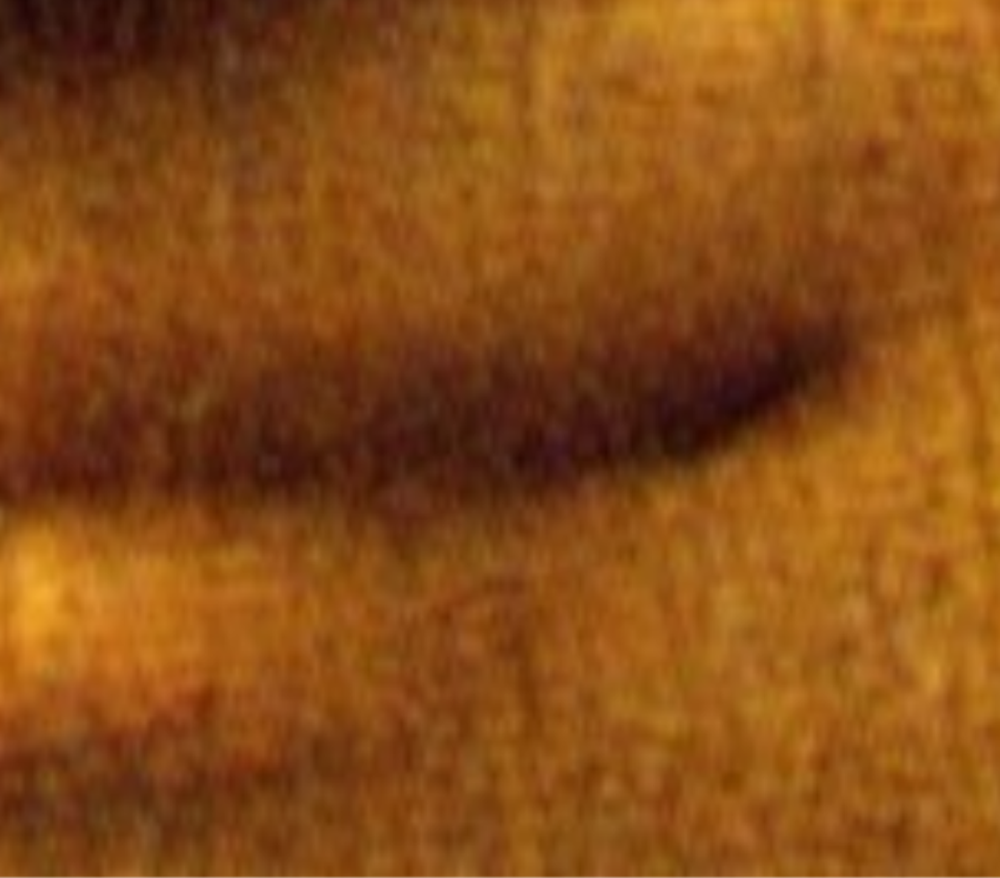

THIRTEEN SPARKS.
original music by Tom West
written sometime between now and 1990
in the space between the Wagon Wheel and The Broken Spoke.
From Tom's CD tower...
Thirteen Sparks goes out of Tom's apartment...